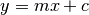
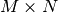
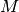
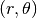
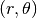

Hough transform¶
The Hough transform in its simplest form is a method to detect straight lines.
In the following example, we construct an image with a line intersection. We then use the Hough transform to explore a parameter space for straight lines that may run through the image.
Algorithm overview¶
Usually, lines are parameterised as , with a
gradient  and y-intercept c. However, this would mean that
goes to infinity for vertical lines. Instead, we therefore
construct a segment perpendicular to the line, leading to the origin.
The line is represented by the length of that segment,
and y-intercept c. However, this would mean that
goes to infinity for vertical lines. Instead, we therefore
construct a segment perpendicular to the line, leading to the origin.
The line is represented by the length of that segment,  , and
the angle it makes with the x-axis,
, and
the angle it makes with the x-axis,  .
.
The Hough transform constructs a histogram array representing the
parameter space (i.e., an  matrix, for 
different values of the radius and  different values of
). For each parameter combination, and
, we then find the number of non-zero pixels in the
input image that would fall close to the corresponding line, and
increment the array at position  appropriately.
different values of
). For each parameter combination, and
, we then find the number of non-zero pixels in the
input image that would fall close to the corresponding line, and
increment the array at position  appropriately.
We can think of each non-zero pixel “voting” for potential line candidates. The local maxima in the resulting histogram indicates the parameters of the most probably lines. In our example, the maxima occur at 45 and 135 degrees, corresponding to the normal vector angles of each line.
Another approach is the Progressive Probabilistic Hough Transform [1]. It is based on the assumption that using a random subset of voting points give a good approximation to the actual result, and that lines can be extracted during the voting process by walking along connected components. This returns the beginning and end of each line segment, which is useful.
The function probabilistic_hough has three parameters: a general threshold that is applied to the Hough accumulator, a minimum line length and the line gap that influences line merging. In the example below, we find lines longer than 10 with a gap less than 3 pixels.
References¶
| [1] | C. Galamhos, J. Matas and J. Kittler,”Progressive probabilistic Hough transform for line detection”, in IEEE Computer Society Conference on Computer Vision and Pattern Recognition, 1999. |
| [2] | Duda, R. O. and P. E. Hart, “Use of the Hough Transformation to Detect Lines and Curves in Pictures,” Comm. ACM, Vol. 15, pp. 11-15 (January, 1972) |
from skimage.transform import hough, probabilistic_hough
from skimage.filter import canny
from skimage import data
import numpy as np
import matplotlib.pyplot as plt
# Construct test image
image = np.zeros((100, 100))
# Classic straight-line Hough transform
idx = np.arange(25, 75)
image[idx[::-1], idx] = 255
image[idx, idx] = 255
h, theta, d = hough(image)
plt.figure(figsize=(8, 4))
plt.subplot(121)
plt.imshow(image, cmap=plt.cm.gray)
plt.title('Input image')
plt.subplot(122)
plt.imshow(np.log(1 + h),
extent=[np.rad2deg(theta[-1]), np.rad2deg(theta[0]),
d[-1], d[0]],
cmap=plt.cm.gray, aspect=1/1.5)
plt.title('Hough transform')
plt.xlabel('Angles (degrees)')
plt.ylabel('Distance (pixels)')
# Line finding, using the Probabilistic Hough Transform
image = data.camera()
edges = canny(image, 2, 1, 25)
lines = probabilistic_hough(edges, threshold=10, line_length=5, line_gap=3)
plt.figure(figsize=(8, 3))
plt.subplot(131)
plt.imshow(image, cmap=plt.cm.gray)
plt.title('Input image')
plt.subplot(132)
plt.imshow(edges, cmap=plt.cm.gray)
plt.title('Sobel edges')
plt.subplot(133)
plt.imshow(edges * 0)
for line in lines:
p0, p1 = line
plt.plot((p0[0], p1[0]), (p0[1], p1[1]))
plt.title('Lines found with PHT')
plt.axis('image')
plt.show()
Python source code: download (generated using skimage 0.6)